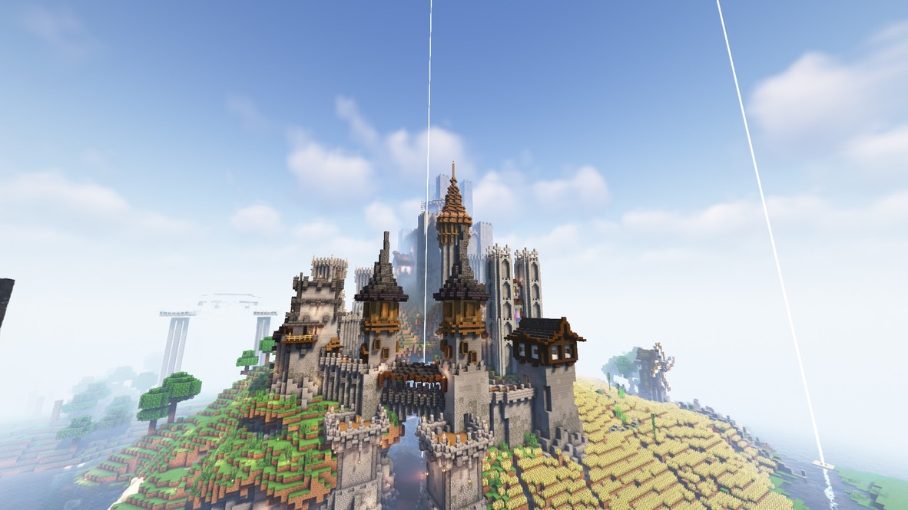

Château Minecraft

J’ai toujours cherché des façons de nourrir ma créativité. Minecraft en est un bon exemple : en assemblant des blocs, j’ai donné forme à un château que j’avais imaginé et au paysage qui l’entoure.

J’ai toujours cherché des façons de nourrir ma créativité. Minecraft en est un bon exemple : en assemblant des blocs, j’ai donné forme à un château que j’avais imaginé et au paysage qui l’entoure.